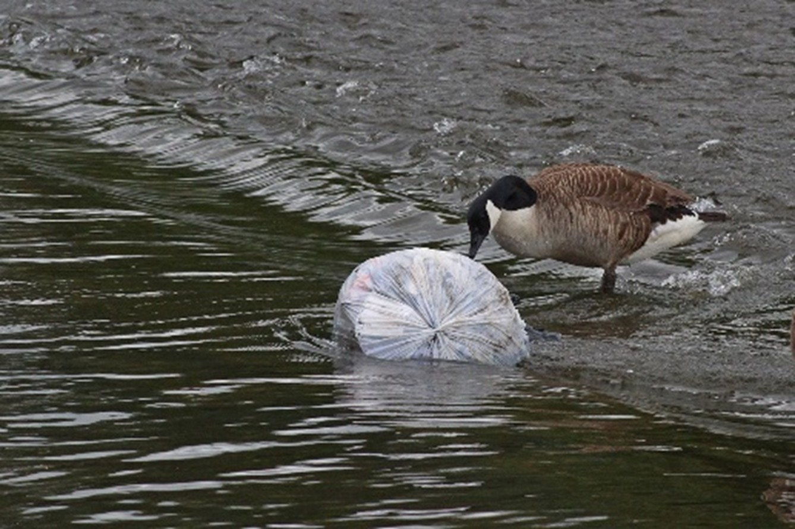
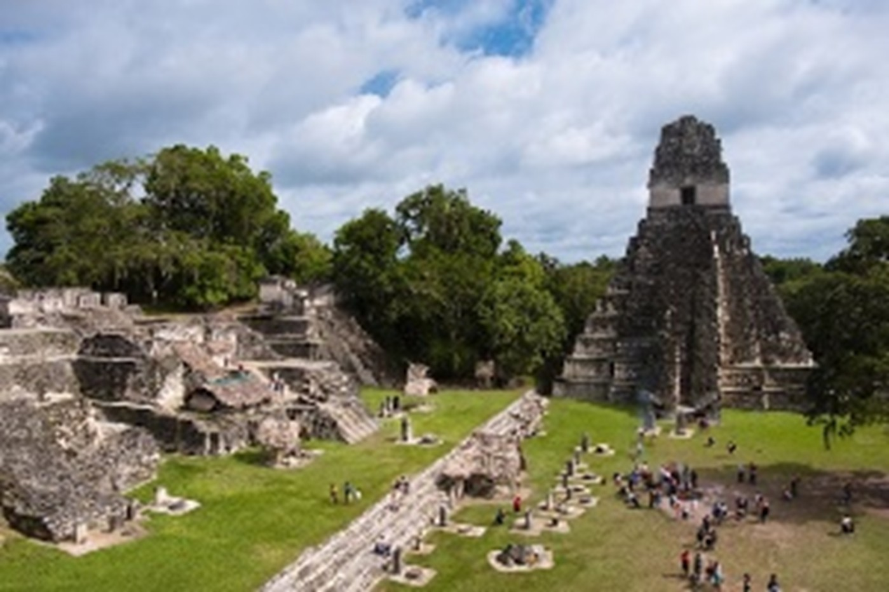
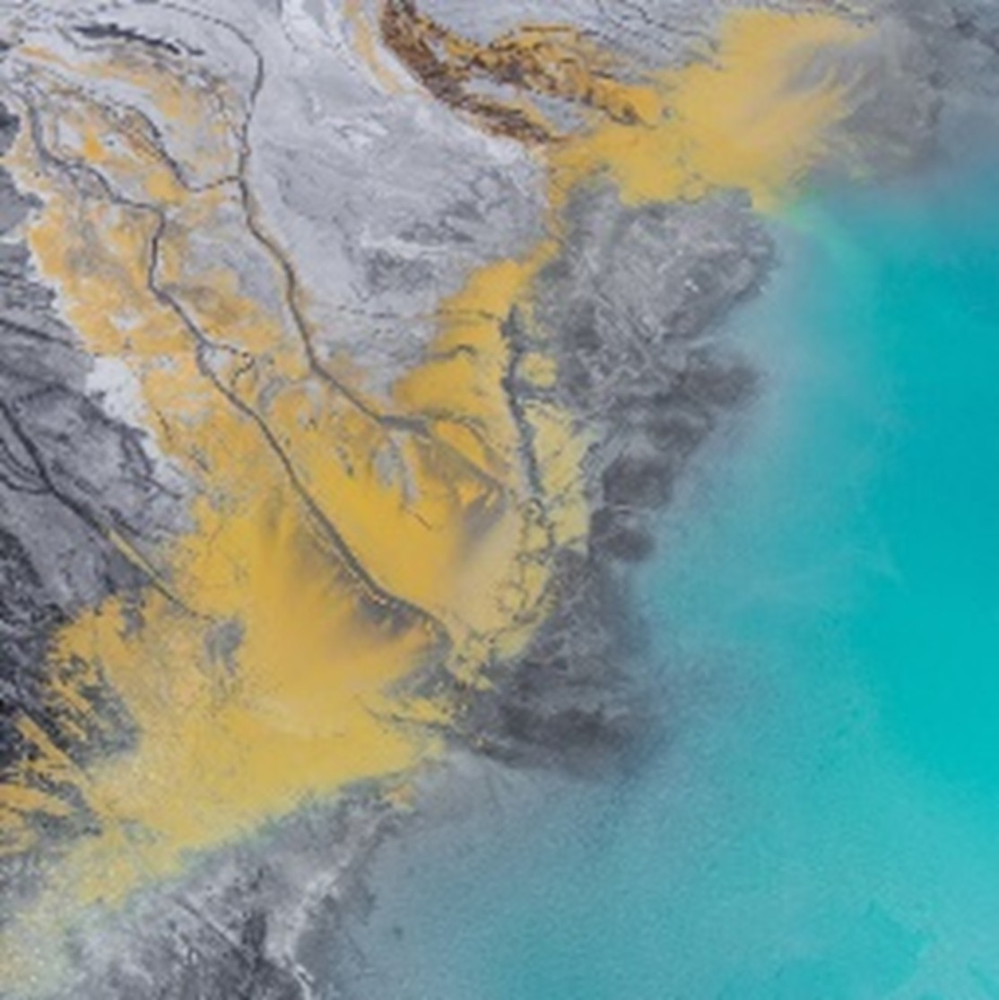
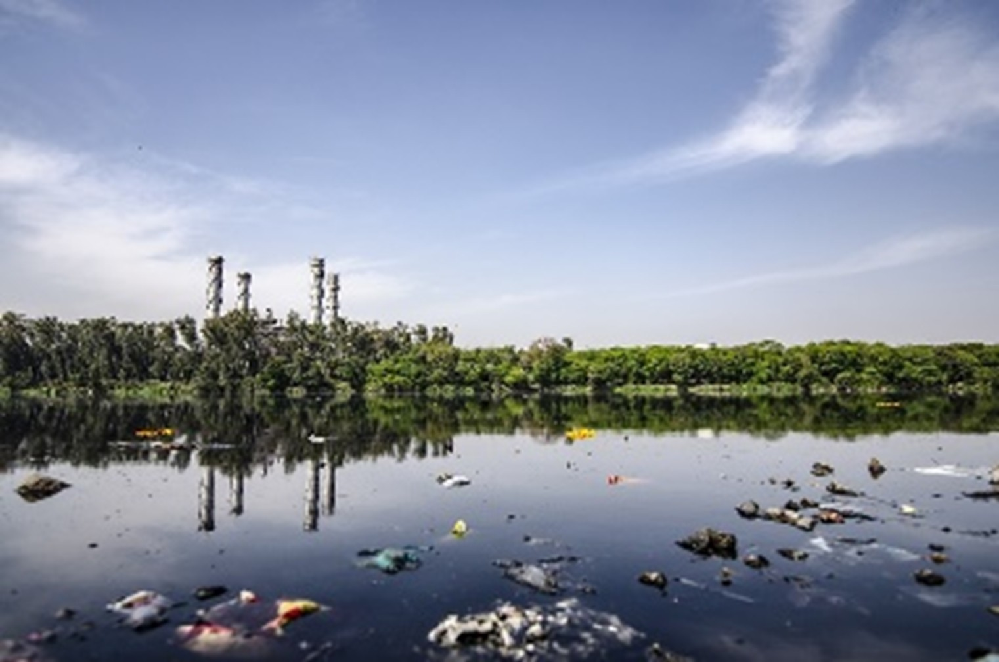
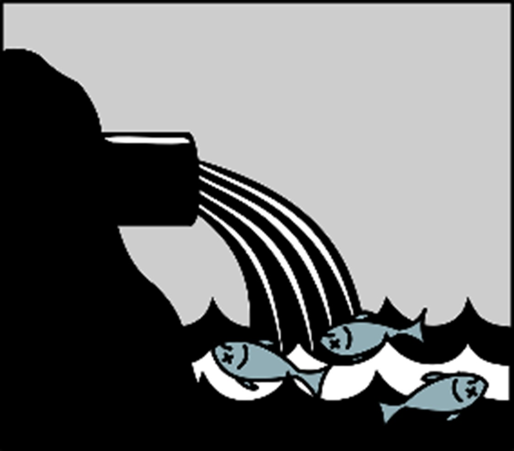
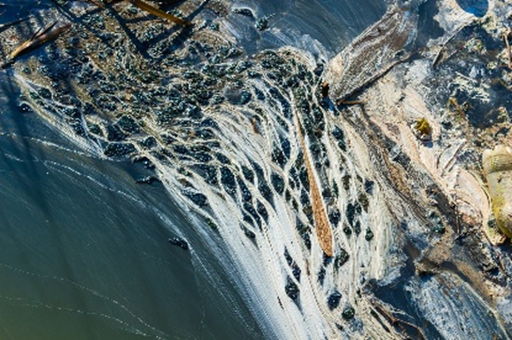
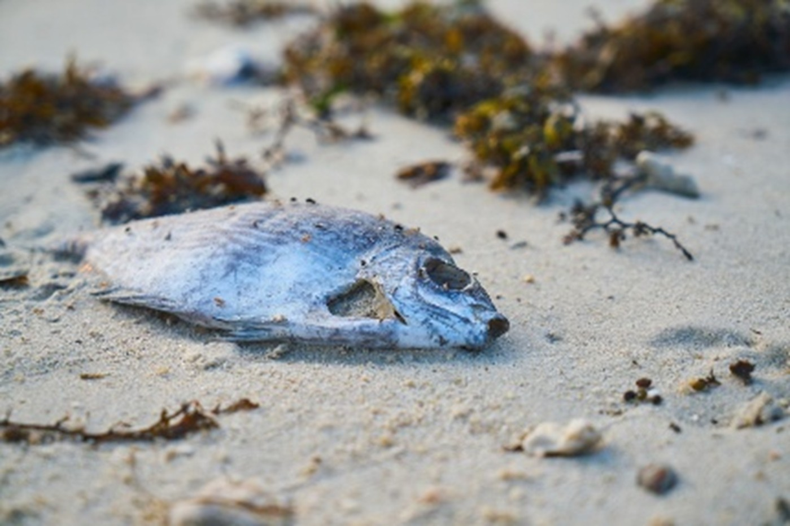
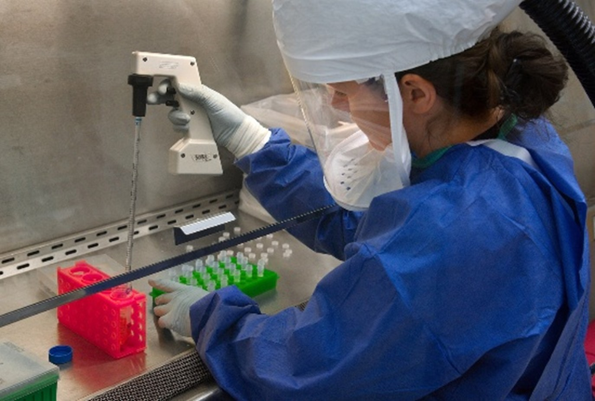

 La pollution de l’eau ne s’agit pas seulement de la pollution chimique. Les types de pollution de l’eau thermique u bactériologiques existent aussi. Il faut aussi noter que comme l’eau n’est pas seulement l’eau liquide des mers, sa pollution concerne donc un domaine beaucoup plus vaste.
 Tandis que la pollution industrielle est un problème grave dans nos jours, la pollution de l’eau existait déjà avant la révolution industrielle.
Des analyses de génétique moléculaire et géochimique révèlent une grave contamination des réservoirs d'eau potable de l'ancienne ville maya de Tikal, qui est peut-être pourquoi ils ont abandonné le site au IXe siècle. [12]
 Elle s’agit des microorganismes pathogènes présents dans l’eau, comme les bactéries et les virus. Cette pollution bactériologique apparaît à cause des excréments, des ordures ménagères et des déchets végétaux. [13]
 Les pesticides (ou insecticides) utilisés dans l’agriculture, les médicaments, la peinture et beaucoup d’autre produits qu’on utilise contenant des métaux lourds, contiennent des nitrates et des phosphates qui polluent nos sources d’eau. [13]
Il existe aussi d’autres types de comme la pollution radioactive, industrielle, agricole, domestique, etc. Mais d’après plusieurs sources, ces types de pollutions peuvent être considéré soit sous la pollution chimique, soit sous la pollution organique.
La pollution de l’eau a évidemment de multiples conséquences graves, qui posent des problèmes pour tous vivants, humaines inclus. Voyons quelques implications majeures de cette pollution infiniment dangereuse. [16]
 Les changements physiques et chimiques sont des modifications des caractéristiques des milieux, comme la salinité, l’acidité ou la température de l’eau. Après un certain point, ces modifications deviennent toxiques pour les organismes vivant dans le milieu
Surtout, l’oxygène est le plus crucial paramètre pour la vie dans l’eau. À cause des activités agricoles et industrielles, la quantité d’oxygène diminue dans l’eau qui résulte aux nombreux morts et extinctions des espèces aquatiques.
 L’eutrophisation est l’ensemble des symptômes que présente un écosystème aquatique à la suite d’un apport excessif de nutriments d’origine humaine (spécifiquement le phosphore et l’azote).
L’apport de ces nutriments stimule fortement la croissance des organismes végétaux, et cause le développement de plantes ou d’algues, autrement dit “une prolifération végétale”. Ces proliférations végétales impactent les milieux et leur biodiversité gravement.
À partir d’une certaine dose, les substances polluantes ont un effet toxique sur les êtres vivants. Alors, lorsqu’elles pénètrent dans l’organisme, elles sont néfastes à sa santé.

De plus, certains polluants ne sont pas biodégradables et s’accumulent tout au long de la chaîne alimentaire.
 Principalement d’origine fécale, les eaux sont contaminées avec des bactéries, des parasites et des virus ; comme les eaux usées ne sont pas suffisamment filtrés. La consommation de l’eau contaminé par des êtres vivants (même aussi par les hommes) peut causer des maladies dangereuses.
De l’autre côté, les conséquences de cette contamination n’est pas limité à la santé. Même le secteur touristique peut être touché par cela, à cause des interdictions de baignade dans certaines zones.